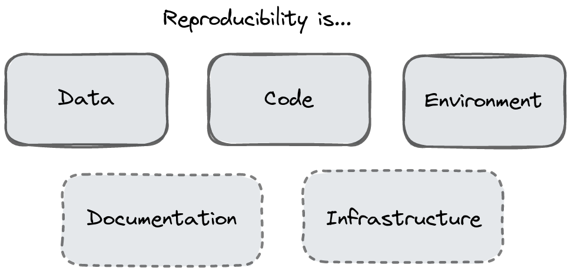
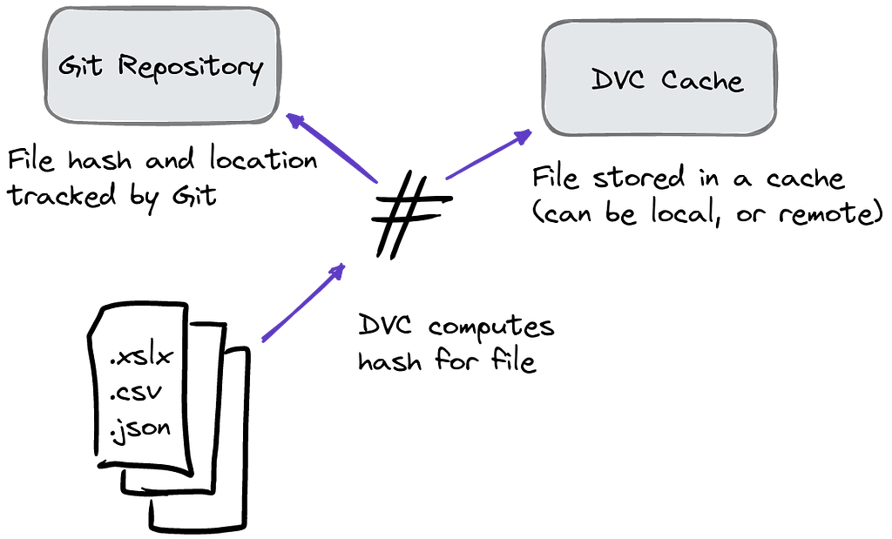

In a former life, I worked as a data scientist in the Government Digital Service (GDS), the UK Government agency responsible for digital transformation. When I joined GDS, I already had some experience of the difficulties of producing statistical publications from working in another Government department. We saw an opportunity to improve the way this was done across all of Government, by incorporating some practices from software development, DevOps, and data science.
Like many large organizations, the UK Government has a lot of legacy processes, and these can slow down the reporting of important statistical information. This is actually a pretty huge problem when you consider just how much information is published in this way. If you believe the value listed on the statistics page of GOV.UK (and there are a few reasons why this may not be the best way to count them), the UK Government publishes about 12 statistical publications a day, and has some ~84,000 available for download (I actually track this number here).
The thing is not the thing, the process is the thing
So, we came up with Reproducible Analytical Pipelines (RAP) to speed up reporting, and to do so in a more reproducible and robust way. Really, we just cobbled together a lot of ideas from other fields like reproducible research, literate programming, test driven development, continuous integration, and tried to make the process of reporting more about creating a repeatable process than about writing the report itself. The tl;dr is that this was quite popular, and it spawned a website, a course, a community, a strategy, lots of mentions in the Goldacre review, and numerous talks, tweets, etc.
So why am I still talking about it? Basically some of the things we found hard when we started RAP are easier now because of the tooling that is being developed to assist in deploying, monitoring, and managing machine learning models in production.
One of those tools is Data Version Control (DVC). Although DVC has a lot of other useful functionality such as defining pipelines to create Directed Acyclic Graphs (DAGs), in this blog I’m mainly interested in DVC’s ability to version control data.
Spreadsheets are the data model for Government
Briefly we think about the key elements of reproducibility as:
- Running the same code
- In the same environment
- On the same data
We also need to think about reproducible software as having good documentation (because reproducibility depends on people understanding how to actually use it) and reproducible infrastructure.

The elements of reproducibility
Whilst code and environment can be solved by source code version control (Git) and managing virtual environments sensibly; managing the data was always a bit tricky. Why? Basically because Government data infrastructure is a hodgepodge of different systems managed by different departments; and for much of Government, the dominant way data is stored, analyzed, and shared is using spreadsheets.
So, although you may have created the most perfect pipeline converting data into a beautiful publication with a the click of a button (saving hours of blood, sweat, tears, and human potential), it only takes one change, in one cell, in one spreadsheet, provided to you by another department, for your pipeline to grind to a halt before it even began.
Sadly DVC is not going to solve that problem. When we developed the original RAP, we talked about writing tests to ensure the integrity of incoming data. These days there are frameworks like Great Expectationsthat make that kind of testing infinitely easier.
Ok, so how can Data Version Control help?
Simply put, DVC allows us to version control data just like we version control files in Git, whilst allowing us to work within the security constraints that analysts often have in Government. Let’s look at this in more detail.
Version controlling data
Often, perhaps most of the time, those doing the analysis and writing the reports do not have control over the provenance of the data. One publication might be a fusion of data from several sources, owned by different departments, delivered in different formats, updated according to different schedules. In this scenario DVC can help by providing a way to track changes in all the various data files, no matter the filetype, just like we track changes to source code with Git.
DVC works by computing a cryptographic hash for each of our data files, it then saves that file into a cache. The hash is unique to that file in its current state — any change, however minor, will cause the hash to change. A pointer to this file is then tracked in Git, containing both the current hash, and the path to the file in the cache.

DVC uses pointers to track changes and the path to files stored within a cache.
New versions of the data are added to the cache as the project progresses, and the pointer in Git updated to reference the new file. At any point if you want to revert to a previous version, you can do so by checking out an earlier version of the pointer with Git, and running a single DVC command (this can be automated) to get the corresponding version of the file from the cache.
This process is best explained by seeing it. Iterative, the company behind DVC has a number of nice explainer videos on YouTube, including this one featuring just concepts, no code.
Living with security restrictions
Often, analysts working in Government need to work within a number of security constraints. The nice thing about DVC is that it is almost entirely agnostic to where you keep the cache. It can be on the local file system or network drive, or using a wide range of other possible options, including: Amazon S3, Google Cloud Storage, Azure Blob Storage (see a complete list here).
This means that you don’t need to convince anyone to pay for a fancy new storage service, or worry about security more than you already do: you can just use the storage that you already have available.
If you share data between team members by storing them on a network drive: great, you can set up your DVC cache there. If you’re using an S3 bucket to store your data: perfect, you can use that. If you don’t have a way of sharing data with your colleagues (or don’t have colleagues) but you still want to version control your data, you can just use the local cache that is set up by default.
To conclude…
In this blog post we’ve covered just the simple use case of DVC: version controlling data. In fact there are a few things that make DVC a great complement to your RAP toolkit, for example the ability to define workflows based on a Directed Acyclic Graph (DAGs).
If you delve into the DVC documentation, be aware that it is very much marketed towards an audience of data scientists and machine learning engineers building and deploying models, but the concept of version controlling data is important whether you are producing a statistical report, or training a state of the art classifier.
If this blog post has piqued your interest, you can install DVC in a number of ways, including by installing from PyPI with Python. You’ll interact with DVC through the command line, so it doesn’t matter if you do the bulk of your analysis in another language like R.
If you want to see more RAP, DVC, or NLP related content from me or Mantis NLP, you can follow me, and @mantisnlp on twitter, or you can sign up to receive new stories from me here. ✌️